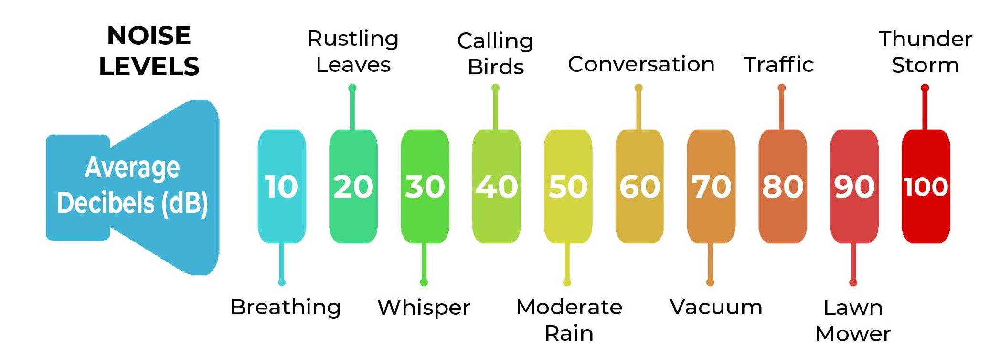

Noise pollution is the intrusion of loud or unwarranted sounds that can detrimentally impact an individual's well-being. When considering the mental and physical health implications of noise pollution, understanding measurement parameters is essential; only sounds negatively associated with impairing health should be classified as noise. Assessing sound involves parameters such as loudness, quantified as sound pressure level measured in decibels (dB), operating on a logarithmic scale. The human auditory range spans from 0 dB to 140 dB, with every 3 dB increase signifying a doubling in sound intensity. The chart below shows a decibel chart, explaining examples of each sound level.
Noise pollution poses substantial threats to individuals' physical and mental well-being. The key hazards of noise pollution include hearing loss, cardiovascular disease, cognitive impairment, and sleep disturbance. Many national governments have legislation and decibel limit values that may apply either nationally or regionally, informed by noise exposure data and noise maps. Guidelines such as the WHO guidelines are public-health oriented and serve as the basis for policy-making. Along with policies, noise mapping is a valuable tool for assessing and visualizing noise levels across a given region. The process involves adding noise data measurements to a graphical representation, highlighting areas with higher noise levels.
Puerto Rico's regulations addressing noise pollution are described in the Public Order Code. Article 2,201 within the Public Order Code specifically outlines the legal framework associated with preventing noise pollution, emphasizing the importance of refraining from emitting or distributing noise that exceeds specified decibel level limits, contingent on the time of day. According to the law, the permissible sound levels are set at 65 decibels between 7 am and 10 pm, and lowered to 55 decibels during nighttime hours.